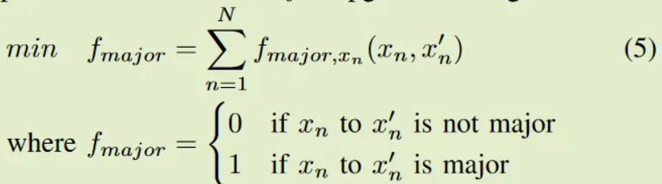

Compatible Remediation on Vulnerabilities from Third-Party Libraries for Java Projects
下面分享一篇我发表在安全学术圈上的论文笔记。原文
原文标题：Compatible Remediation on Vulnerabilities from Third-Party Libraries for Java Projects
原文作者：Lyuye Zhang, Chengwei Liu, Zhengzi Xu, Sen Chen, Lingling Fan, Lida Zhao, Jiahui Wu, Yang Liu
原文链接：https://arxiv.org/abs/2301.08434
发表期刊：In Proceedings of the 45th International Conference on Software Engineering(ICSE)
笔记作者：senu11@学术安全圈
笔记小编：黄诚@学术安全圈
本篇从用户的角度出发，在保证用户最好的体验下(即修复漏洞的版本不会造成业务崩溃)进行漏洞修复。
1.简介
SCA（software composition analysis）工具修复的漏洞质量差异很大，无效的修复可能会导致副作用，例如编译失败，从而阻碍用户接受。由于现有的 SCA 工具无法正确处理用户对修复项目兼容性的担忧，作者为 Maven 项目提出了一个在不破坏项目的情况下修复第三方库漏洞的兼容修复工具 CORAL。CORAL 修复了 87.56% 的漏洞，优于其他工具（最好的 75.32%），编译成功率达到 98.67%，单元测试成功率(unit test rate)达到 92.96%。此外流行的Maven项目中78.45%的漏洞可以在不破坏编译( breaking the compilation,)的情况下修复，其余的漏洞（21.55%）要么通过升级破坏编译修复，要么升级无法修复。
2.背景（赶时间的可以不看）
2.1.motivation
Dependabot 是 GitHub 上依赖性安全管理扩展，commons-lang采用了 Dependabot 来管理依赖关系。然而一次修复在升级后造成了构建失败。Dependabot 通过计算来自其他存储库的测试通过率作为置信度分数来实现兼容性分数，然而这个例子中的兼容性分数是未知的，由于没有基于代码的兼容性计算，依靠人群的知识的兼容性分数不能保证成功编译。
CORAL 依靠基于静态代码的兼容性检查器与 DG(dependency graph) 的全局视角保持一致，以确保调整后的依赖关系不会破坏项目。
2.2.现有工具处理兼容性问题缺点
Dependabot 创建 PR（Pull Requests） 将易受攻击的依赖项升级到安全版本，不为整个 DG 提供整体修复建议。对于兼容性，Dependabot 会计算从其他存储库升级的成功测试率作为置信度分数。然而，这个分数可能不可靠，因为它通常不可用，兼容性最终取决于代码库的上下文。
Steady 是一个开源学术 SCA 工具，带有一个开源漏洞数据库，其调整直接依赖和传递依赖的版本以细粒度降低漏洞风险。它利用漏洞的可达性分析来过滤掉低风险的无法访问的CVE，可达性包括静态和动态分析，它只在开始时构造一次调用图。Steady 优先考虑非易受攻击的版本，然后根据兼容性概率 p 去确定最佳候选者。为了推导p，它将可达的构造（类、方法等）定义为 touch points，并计算升级版本中当前 touch points 的百分比作为p。由于其不确定性，概率可能不可靠。
以下两个商用工具记为 Com A 和 Com B（这是怕绿尸函吗）
Com A 仅调整DG的直接依赖项以修复漏洞。基本策略是将有漏洞的库升级到最接近的无漏洞版本，因为越接近的版本通常越可能兼容。可达性由 WALA 以静态方式实现，优先考虑关键的可达漏洞,但是没有考虑修复的兼容性。
Com B 对直接依赖项进行修复。com B 考虑了与直接依赖相关的传递依赖的所有漏洞；遍历所有直接依赖项，对于每个版本，Com B 尝试候选版本并解决后续依赖关系以衡量更新后的整体漏洞；然后为这个直接依赖选择整体漏洞最少的版本。该策略考虑了升级后的直接依赖对上游树的连锁反应，然而由于直接依赖通常不是独立的，而是通过传递依赖关系相互连接的，因此每个直接依赖的各自优化并不一定会导致全局优化。
2.3.小总结
作者对 GitHub 上被拒绝的修复建议进行研究，用户最关心的问题是不兼容，占 51.31%。对于修复漏洞中出现的兼容性为主要问题的一系列的现状，有两个原因无法被现有的修复工具妥善处理：
（1）现有的修复工具只对单个第三方库进行局部优化，而不是对整个依赖图（DG）进行全局优化，可能会遗漏不兼容的关系，也无法在兼容性和安全性之间做出选择(fail to handle the trade-off between compatibility and security)。
(2)现有的修复工具基于原始 DG 提出修复建议，忽略了建议给其和底层调用图带来的结构变化。因此，过时的 DG 可能导致不兼容、缺乏对新漏洞的修复、浪费对未使用的依赖关系的补救措施。
要解决现有的问题，有三个较大的挑战：
c1：第三方库的绝对最佳解决方案并不总是可用，必须在决策过程中处理安全性和兼容性之间的问题。
c2：全局优化的复杂度随着依赖的数量呈指数增长，因为要遍历所有库的版本组合。
c3：对一个三方库的建议会直接或间接地改变 DG 的结构、调用图和 DG 的兼容性，导致其余三方库的最佳解决方案也可能会发生变化，这些影响通过依赖关系从更改后的库传播到整个 DG，在本文中称为ripple effects。如果 DG 没有得到相应更新，ripple effects可能会导致次优解决方案。
3.数据集
Data set：https://sites.google.com/view/icse23remediation
为了构建开发中的 Maven 项目数据集，收集了 2022 年 5 月 21 日在 GitHub 上由 Maven 管理的 301 个star最多的项目。
首先从 GitHub 中选择了star最多的 Java 项目，并排除了非 Maven 项目；接下来，手动修改了每个项目的 POM 文件，以应用来自这些工具的修复建议。用 1K+ star 筛选了这些项目，得到了301个入选项目。数据集的demographics如图 4 所示，具有以下特点：（1）代码库大小不小（平均 22.19 kloc）； (2) 依赖图的大小范围较大（最大 327，平均 32.0）； (3) 项目受到足够数量的 CVE 影响（平均 27.6）； (4)项目受欢迎。

为了试验准确的漏洞映射，使用管道定期从 NVD 抓取 CVE feeds，并通过关键字匹配对 CVE 的语言进行预分类。由于 CVE 描述是自由文本，因此手动对来自参考链接和相关 CPE 的映射进行分类。到2022 年 5 月 21 日为止，收集了 1759 个与 Maven 库关联的 CVE 的映射。
由于评估需要进行可达性分析，需要与 CVE 关联的易受攻击的方法和类，因此首先从 301 个项目中用作依赖项的 2326 个唯一库中识别出 750 个 CVE（占所有 Maven CVE 的 42.64%）；然后从 NVD 链接上可用的补丁中成功识别并手动收集了 300 个 CVE 的易受攻击的类和方法。
4.框架

上图是CORAL的框架，包含四个步骤。
step1：从项目对象模型(pom)文件、Maven的版本控制文件和项目的类文件生成DG和调用图(call graph,CG)；
step2： 将 DG 划分为子图；
step3：在保证兼容性的情况下，根据预先计算的漏洞映射(vulnerability mappings)优化漏洞风险子图；
step4：如果遇到死胡同，则试探性地回溯(backtracking)到父顶点,然后返回DG中所有TPL(第三方库)版本调整的最终修复建议。
4.1.构建 DG 和 CG
4.1.1.构建 DG
通过pom文件和类文件，CORAL通过Maven命令提取依赖树，并通过从预先计算的依赖数据库补全缺失的依赖关系来修复DG(读者有个疑问，怎样计算的依赖？)。根据Maven 文档，由于项目的正常使用不涉及具有test scope 的依赖项，CORAL 从 DG 中排除了具有 test scope 的依赖项（读者有个疑问，怎样排除的？）。
具体来说，DG 表示为 DG = Graph(V, E)，
其中 V = {${e_i}^x$}，i ∈ {0,,,N-1}，x ∈ {0,,,L}；
E = {$e_i$ → $e_J$}，i,j ∈ {0,,,N-1}，→表示调用边的方向，x指定相对于DG的堆栈级别（x specifies the stack level w.r.t the DG）。
（读者有个疑问，L可以结合4.2.节理解为层级，那N代表什么？）
4.1.2.构建 CG
CG是由Spark算法根据项目的类文件在Soot基础上静态构建的。
main()被认为是入口点，作为调用图的开始；若没有main()，overestimate（这里会不会是作者写错了，应该是estimate？） 执行项目中实现的所有方法的可能性，因此用户项目中的所有方法都被视为入口点。
由于处理ripple effects需要动态更新的CG来实现实时可达性分析，CG中的调用边被模块化地收集（读者有个疑问，用什么进行模块化收集？）。即调用边不是从Uber jar（具有所有依赖关系的根项目）中提取的，而是从每个依赖的jar中分别按顺序提取的，然后整合到一个源自根项目的图中。
对于每个依赖，来自父库的调用者作为子库的入口点。
修复之后，如果子库被建议为其他版本，其中的调用者可以被相应地替换，以灵活地生成实时CG。
4.2.构建 DG 子图
由于对整个 DG 进行优化的复杂性很高，CORAL 将 DG 划分为子图以减小整体解空间的大小，分为垂直分区和水平分区。
4.2.1.垂直分区
如图 2 (a) 所示，垂直分区迭代地将 DG 分成多个分区，这些分区除了来自根项目v1的直接关系外，彼此之间没有依赖关系，直到所有未连接的分区被分割。由于直接依赖不相互依赖( Since the direct dependencies do not depend on each other,读者这句话没有看懂，，，emo了)，所以对多个分区的优化可以独立地、同时地进行。例如图 2（a）中的分区 1 和分区 2 不相互依赖，可以对它们进行分区以提高性能。
4.2.2.水平分区
垂直分区并不能处理类似图 2 (a) 左侧的大分区的情况，水平划分可以进一步减少解空间，子图按层级(level)划分以保留语义。根据 Do stack traces help developers fix bugs，函数的语义沿着调用链衰减，即更接近根的依赖比远离根的依赖更多。依赖性由 level 标记，表示从根开始的最小跳数。
为了更好地保留依赖关系的语义以防止潜在的不兼容性，CORAL 将 DG 拆分并将level为 l 和 l−1 的顶点分组为子图，如图 2 (b) 所示。
然后，由于更紧密的依赖关系保留了更多的语义，CORAL 以自上而下的方式从根用户项目开始优化，低级依赖应尽可能在兼容性约束方面兼顾上级依赖。因此，CORAL 试图一次优化相邻两层的依赖关系，然后用新更新的CG 将分区的滑动窗口下移到下一层。
通过水平划分，复杂度可以降低为 O(n) = $\sum_{Phori=1}^{phori}$ $\sum_{Pvert=1}^{pvert}$ $\prod_{n=1}^{N_P}$。(作者为什么写文章的时候不考虑一下菜逼的感受，都不带解释一下的嘛)
坏处是，对于跨多个级别的依赖边，可能会忽略具有较低漏洞风险的潜在更好解决方案。为了弥补损失，第4.4 节引入了回溯机制以避免出现次优情况。
4.3.优化 DG 子图(数学不好的别看)
本节是基于Z3 SMT 进行的。
CORAL对每个子图进行优化，在版本变化兼容的条件下，使漏洞风险最小。漏洞的消除遵循方程（1）中的目标函数。
其中 M 是库的数量；Vul 是顶点 m 的漏洞数量；$f_{cvss}$ 是 CVSS 的权重；$θ_v$ 是漏洞 v 的可达性系数，(对于可达漏洞，有可能被攻击者利用，$θ_v$ 较大);将具有不确定漏洞类或方法的漏洞归类为未知漏洞，其严重程度介于可到达和不可到达漏洞之间;由于不同的漏洞会导致不同的风险，在计算时使用 CVSS 来优先考虑风险较高的漏洞。
基本的漏洞消除策略是找到具有最少的可达和未知漏洞的版本。然后，如果有多个版本满足这些条件和其他约束，则优先选择没有不可达漏洞的版本。
兼容性约束应该是严格的,但并非所有类型的不兼容性都可以准确检测到。一般来说，CORAL 主要解决语义中断、句法中断和依赖冲突，除了语义破坏，其余的都可以静态和高效地检测。因此，将其余的检测作为约束集成到优化中：
synb为语法破坏，是根据可达性分析和API兼容性检查器计算出来的。对于一个库的每个版本对，通过三个最广泛使用的API兼容性检查器 japi-compliancechecker, revapi, =japicmp根据这对jar文件计算可能导致编译失败的修改过的API。然后，基于可达性分析，从 CG 中获得该库的被调用的API，如果有任何有问题的 API 被调用，编译就会失败，CORAL 标记这个候选版本为破坏性的，弃之。
DC 问题(Dependency conflict)是根据 Maven 版本规则 计算的。版本范围定义了依赖项的允许版本。如果依赖需要的两个版本范围不重叠，Maven会在编译前的版本解析时报告DC。 CORAL 实现了类似的逻辑，仅选择依赖项定义的范围交集内的版本。超过99%的依赖版本规范不是由范围确定的，而是单一的推荐版本代替，即不考虑兼容性所有版本都可用，CORAL 像Maven一样将所有版本都作为DC检测的候选版本。
据此，语义中断通常是由覆盖范围有限的单元测试表示的，很难用静态有效地检测；此外，其也是单元测试失败的主要原因，这是用户拒绝补救建议的主要原因之一。CORAL 依靠辅助信息来推断潜在的语义破坏，并通过遵循 SemVer 和 Maven 版本控制指南将其可能性降到最低。根据 SemVer ，重大(major)升级可以打破原状，CORAL 尽可能避免使用重大升级/降级，除非其不易受攻击且满足其他兼容性标准。因此，除了主要目标之外，还添加了一个次要目标 $f_{major}$，即具有重要升级/降级的依赖项的数量：

SemVer 规定 Minor 不应包含不兼容更改，但 发现 Minor 升级不如 Patch 升级兼容，其会引入更多破坏性更改。因此，如果所有其他条件都满足，CORAL 倾向于Patch升级而不是Minor升级。另一个次要目标函数 $f_{minor}$ 是为了实现这个目的而创建的:
除了 SemVer，Maven 版本控制规则 也有助于识别潜在的破坏版本。首先，pre-release 版本，也称为开发版本，如 alpha、beta、SNAPSHOT 版本，不稳定且容易发生重大更改，其选择优先级低于 Major 升级。其次，较大的版本跨度通常更有可能导致不兼容的更改。 CORAL 试图尽可能地减少从原始版本到新版本的版本跨度。针对这两个目标，给出fdev和fspan的函数：
其中 dist(x, y) 是版本序列中 x,y 之间的距离。
使用SMT求解后，子图中的每个顶点都分配一个选定的版本，CG中升级的库将相应更新，但所选版本可能会被下一次优化推翻，因此所有可选择的候选版本都被保存并提供给下一个优化。
例如在图 3 (a) 中，Lib 3 最初有 7 个候选者，由于不兼容性和漏洞被过滤为 3 个；在下一次迭代 (b) 中，Lib 3 由于不兼容而将其候选者进一步过滤为 2；然后，由于与原始版本的版本跨度较小，因此选择了 v5，但是在第三次迭代（c）中，v5 被推翻，因为它与较低层级的父库 Lib 13 不兼容；由于无论层级如何，编译和Maven解析都会失败，因此选择的版本必须遵循等式（3）和（4）中的约束，因此放弃v5，选择具有兼容变化的v6。
4.4.回溯
尽管 DG 的顺序分区降低了复杂性，但它们可能导致次优解决方案和死胡同。为了缓解这些问题，CORAL 中实现了两种类型的回溯机制，即硬回溯和软回溯。
4.4.1.硬回溯
在决定库的最佳版本期间时，其中所有版本都可能破坏项目而违反约束，实施硬回溯以避免死胡同，回溯目标是当前库的父库。由于回溯需要重新访问相关的顶点，因此优先考虑最底层的父库，以减少重新访问的工作量；然后，如果较低的父级再次触发回溯，则尝试较高的。在一次回溯期间，目标父母的选定版本暂时标记为不兼容，并尝试其他版本。
4.4.2.软回溯
当SMT求解器选择的版本不是版本列表中漏洞风险最低的版本时触发软回溯，用于避免次优解决方案，比如无漏洞版本。与硬回溯一样，软回溯优先考虑较低级别的父库，不同的是软回溯不会将父版本的当前版本标记为不兼容，而是unpreferrable，即如果回溯后其他版本被证明不如unpreferrable最优，则仍会选择unpreferrable版本。因此，即使版本满足约束条件，它们也可能被软回溯忽略。
在软回溯过程中，CORAL 保存回溯库和目标父库之间的整体漏洞，以供将来比较；回溯后，CORAL 将当前运行的漏洞与之前保存的漏洞进行比较，并采用漏洞最少的运行版本，将其相应地应用到回溯库中。
为避免无限循环，在一次软回溯运行期间不会再次触发软回溯。此外，如果在软回溯期间触发硬回溯，则当前运行版本将被丢弃，并尝试其他版本。
4.5.算法总结
总之，CORAL 旨在克服全局优化的高度复杂性和ripple effects的挑战。